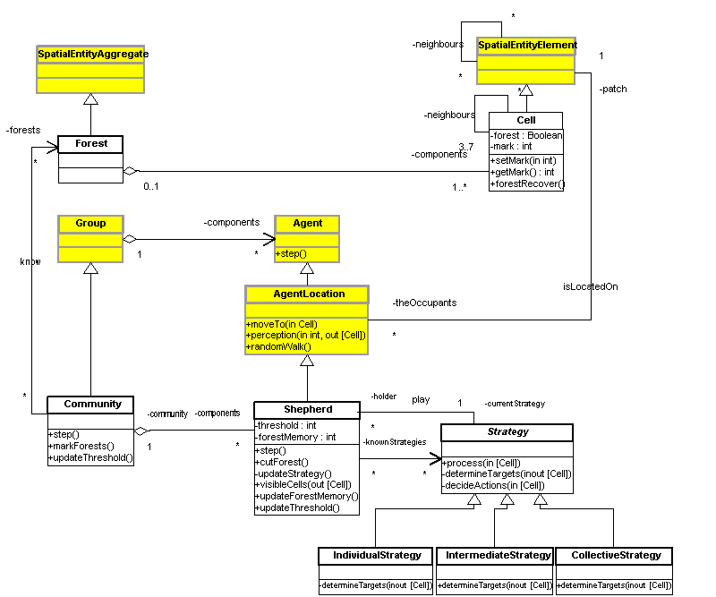
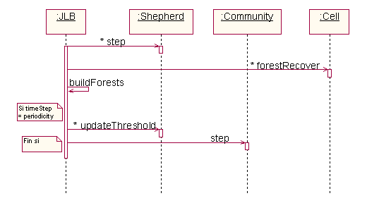
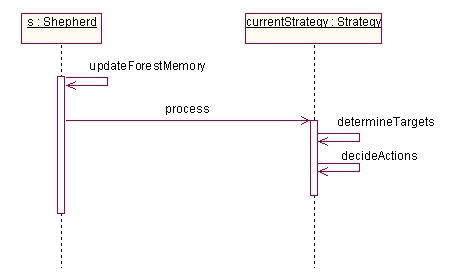
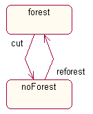
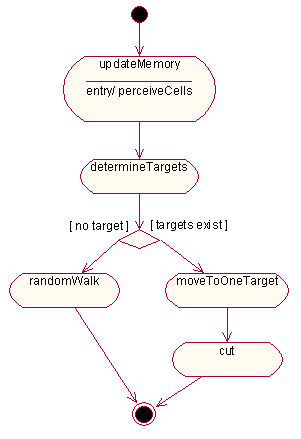

|
JLB... a model by Jean-Luc Bonnefoy
Abstract of the paperThis paper demonstrates that multi-agent systems have the capacity to model a region in all its complexity. An example is developed to show that these tools are not only capable of spatializing and distributing the behaviour of individuals, but above all, that they allow individuals to integrate different perceptions of space as well as the constraints imposed on them by a community. A dialectic is established between individuals, spaces and society, which is used to simulate a region using clearly defined social representations and spatial practices, which are suitable for testing our geographical theories and hypotheses. Presentation of the modelThe UML diagrams below have been created with two software ingineer tools : Vision (for the class diagram) and Rose (for the others). The UML class diagram, describing the static structure of the model in the implementation view.  The following UML sequence diagram, describing the dynamic of the model main step :
 The following UML sequence diagram, describing the dynamic of the agent step :  The following UML state diagram, describing the states of the cells :  The following UML activity diagram, describing the sphepherds activities:  ReferencesBonnefoy, J.-L., Le Page, C., Rouchier, J. et Bousquet,
F., 2000. Modelling spatial practices and social representations of space
using Bonnefoy, J.-L., Bousquet, F. et Rouchier, J., 2001. Modélisation
dune interaction individus, espace, société par les systèmes For more information, contact the author: J.L. Bonnefoy. For more information about the UML diagrams, contact P. Bommel or C. Le Page. Download the model (Cormas2002)
|